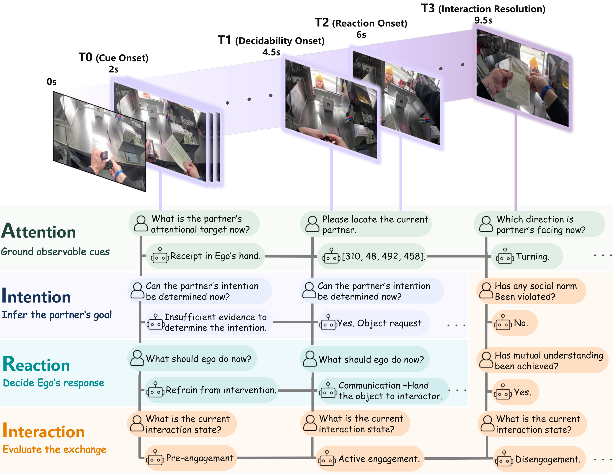
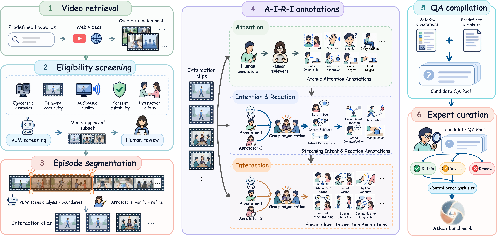
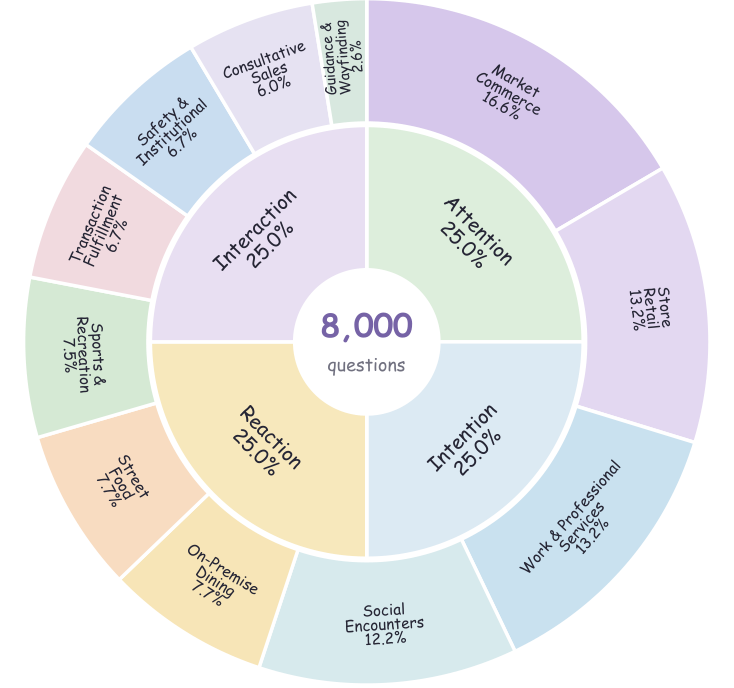
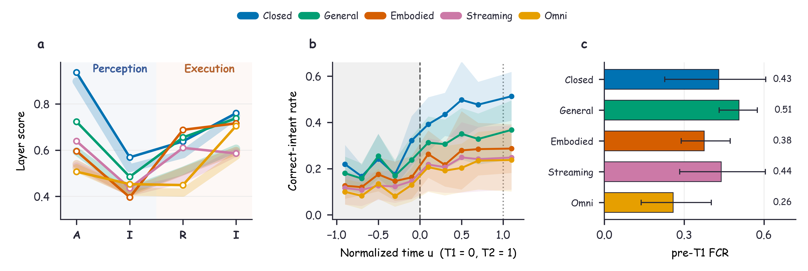
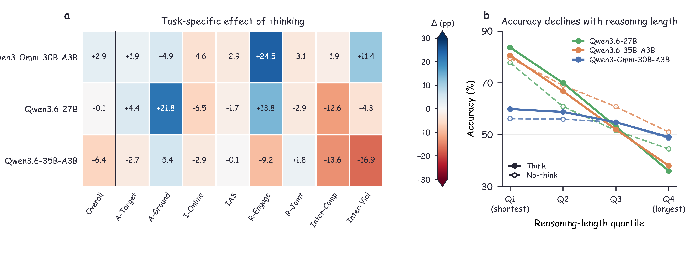

A causal, time-anchored streaming benchmark that diagnoses where embodied agents fail along the real-time loop of Attention, Intention, Reaction, and Interaction.

T₀ (social cue onset), T₁ (earliest moment intent becomes decidable), T₂ (ego response onset), and T₃ (interaction resolution). Queries at timestamp τ receive strictly the causal prefix O_{≤τ} without access to future evidence. (Click any figure to inspect at full resolution.)
Embodied agents operating around people must not only recognize social cues, but also decide when the available evidence is sufficient, whether to intervene, and how to respond without violating social norms. Existing benchmarks typically evaluate these abilities in isolation or with access to completed videos, obscuring where an online social decision fails. We introduce AIRIS, a causal streaming benchmark that formulates social embodied intelligence as a time-anchored chain of Attention, Intention, Reaction, and Interaction (A-I-R-I). AIRIS contains 8,000 expert-curated questions grounded in 357 egocentric clips across 11 context categories and 36 capability dimensions. At each query, models receive only the observation prefix available at that time; decision-aware metrics reward calibrated waiting and complete reactions while penalizing premature commitment. Evaluating 45 proprietary and open-source general-purpose, embodied, streaming-video, and omni-modal models reveals fragmented and temporally miscalibrated competence. General-purpose VLMs excel at passive cue grounding and intent recognition, whereas embodied specialists lead on isolated reaction sub-decisions; yet across all families, models frequently guess intents before sufficient evidence emerges and fail to jointly align intervention timing, action domain, and concrete execution within the same episode. AIRIS thus provides a diagnostic foundation for bridging the gap between passive social perception and reliable embodied interaction.
Decomposes multi-party social interaction into an interdependent four-stage decision process anchored at T₀–T₃, linking observable cue grounding with latent goal inference, proactive ego action, and social norm compliance within shared episodes.
8,000 expert-verified QA items across 11 real-world contexts and 36 capabilities evaluated strictly from causal prefixes O_{≤τ}, eliminating future-information leakage while explicitly scoring calibrated abstention.
Benchmarks 45 models across 5 architectural families, uncovering two fundamental bottlenecks: severe pre-T₁ false commitment and multiplicative collapse on end-to-end reaction composition.
AIRIS structures online social embodied intelligence into 36 fine-grained capability dimensions spanning observable cue grounding, streamed intent inference, ego response specification, and interaction compliance.
Every released question preserves a verified provenance chain back to its source egocentric clip, reviewed A-I-R-I annotations, and leak-free causal prefix. Model proposals are never accepted as ground truth without multi-annotator human adjudication.


Covering commercial, professional, everyday social, dining, institutional, and navigation settings (230 subscenes).
| Benchmark | Benchmark Profile | Input Setting | Attention | Intention | Reaction | Interaction | ||||||||
|---|---|---|---|---|---|---|---|---|---|---|---|---|---|---|
| Ego View |
QA Count |
QA Dims |
Human Review |
Causal Stream |
Full Video |
Partner Ground |
Cue-Target Ground |
Latent Goal |
Intent Decidab. |
Ego-Action Decision |
Calibrated Inaction |
Completion / Understand. |
Social-Norm Compliance |
|
Explore both the 37-model main-paper table and the complete 45-model supplementary evaluation pool across all stage-specific diagnostic breakdowns. Click any column header to sort; green badges mark the best and underlined values mark the runner-up in the active view.
Evaluating 45 models under identical causal observation prefixes exposes structural bottlenecks in temporal restraint, decision composition, and test-time reasoning.
General-purpose VLMs dominate passive cue grounding (Gemini-3.7-Flash: 0.936 Attention, 0.569 Intention), yet lose their lead on downstream actions, where embodied specialists like HY-Embodied-VLM-1.0 overtake on Reaction (0.688). Understanding social cues does not automatically yield executable embodied policy.
Before an intent is humanly decidable (τ < T₁), models aggressively hallucinate specific goals instead of abstaining (GLM-5.3-Flash 64%, Qwen3.6-35B-A3B 63%, GPT-5.6-Sol 57%, Gemini-3.7-Flash 42%), capping best-in-class IAS at just 0.237.
Requiring simultaneous correctness across engagement timing, action domain, concrete sub-action, and speech function causes reaction accuracy to collapse multiplicatively: HY-Embodied-VLM-1.0 drops from 0.688 aggregate Reaction to 0.028 Joint-EM, and no model exceeds 0.147.

u (T₁ = 0, T₂ = 1) rises slowly after decidability onset and reaches at most ~0.5 by T₂.
(c) Substantial pre-T₁ False Commitment Rates (0.26–0.51) show models fail via overconfident guessing or blind passivity rather than calibrated waiting.

+21.8 pp on A-Ground for Qwen3.6-27B) and engagement for Qwen3-Omni-30B-A3B (+24.5 pp), yet consistently degrades online intent (I-Online) and norm compliance across models (Qwen3.6-35B-A3B drops −6.4 pp Overall).
(b) Traces containing cognitive-revision markers (“wait”, “however”, “reconsider”—present in 77% of Qwen3.6 traces) lose 27–30 percentage points: under partial visual evidence, prolonged verbal deliberation fills perceptual gaps with unsupported speculation. Native streaming and omni-modal architectures likewise show unrealized dividends on high-level Theory of Mind.
Browse 15 representative evaluation items spanning all four A-I-R-I stages—from joint semantic-spatial gaze/target grounding and pre-T₁ calibrated abstention to multi-domain checkout reactions and proxemic compliance. Click any card to zoom in.
If you find AIRIS useful for your research in embodied intelligence, streaming video understanding, or human-robot interaction, please cite our paper:
@article{zhou2026airis,
title = {AIRIS: Benchmarking Social Embodied Intelligence in Egocentric Streaming Videos},
author = {Zhou, Yuchen and Wu, Hongsheng and Tang, Jiayu and Mao, Yunxuan and Ye, Hanjing and Zhang, Shenghao and Tang, Jing and Fan, Chun-Kai and Huang, Yufei and Ling, Yonggen and Zhang, He},
journal = {arXiv preprint},
year = {2026}
}